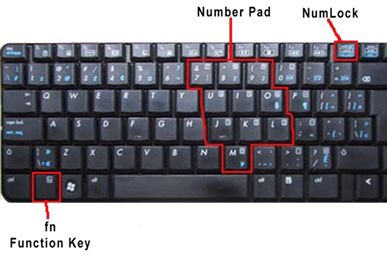

Expansion- <<
Previous Next >> Laptop Displays-
PCH17-Notebook Features
Notebook keyboards have special function keys that do not exist on standard desktop keyboards. Notice that in the image below, you can see the special blue icons on the keyboard, especially on the arrow keys and function keys.

Special function keys. Image used under CC-BY license from National Information, Security, Geospatial Technologies Consortium.
By pressing the FN key in combination with the notebook specific keys (the blue keys in the image above) the user can access features such as increasing or decreasing screen brightness, toggling Wi-Fi and Bluetooth radios on and off, cycling through external monitor connections, adjusting the speaker volume, and other features depending on the specific laptop. Note in the image above that some of the letter and character keys have numbers written on them. That is because most laptops do not have room for a dedicated number pad and these keys provide that functionality when pressing the FN and NUM LOCK combination. If you are typing and notice numbers on the screen instead of letters, it may be the result of accidentally pressing that key sequence.
Another special feature of a laptop is the ability to connect an external monitor. Most desktop computers come standard with a single video output, whereas most laptops come with an external video port using HDMI, DisplayPort, DVI, or VGA. This allows you to duplicate, or extend, the internal display to the monitor to create a single continuous “larger” monitor. This is also advantageous when connecting a projector to the external port for presentations.
PCH17-筆記本功能
筆記本電腦鍵盤具有標準台式機鍵盤上不存在的特殊功能鍵。請注意，在下圖中，您可以在鍵盤上看到特殊的藍色圖標，尤其是箭頭鍵和功能鍵上的圖標。
特殊功能鍵。根據國家信息，安全，地理空間技術聯盟的CC-BY許可使用的圖像。
通過同時按下FN鍵和筆記本專用鍵（上圖中的藍色鍵），用戶可以使用以下功能：增加或降低屏幕亮度，打
開和關閉Wi-Fi和藍牙無線電，通過外部顯示器連接循環，調整揚聲器的音量以及其他功能，具體取決於特
定的筆記本電腦。請注意，在上圖中，某些字母和字符鍵上面寫有數字。這是因為大多數筆記本電腦沒有足
夠的空間容納專用數字鍵盤，並且在按下FN和NUM LOCK組合鍵時，這些鍵可提供該功能。如果您在屏幕上
鍵入並註意數字而不是字母，則可能是由於不小心按下該鍵序列而導致的。
筆記本電腦的另一個特殊功能是可以連接外部顯示器。大多數台式機標配單個視頻輸出，而大多數筆記本電
腦均帶有使用HDMI，DisplayPort，DVI或VGA的外部視頻端口。這使您可以將內部顯示複製或擴展到監視器
，以創建單個連續的“較大”監視器。將投影儀連接到外部端口進行演示時，這也是有利的。
Expansion- <<
Previous Next >> Laptop Displays-